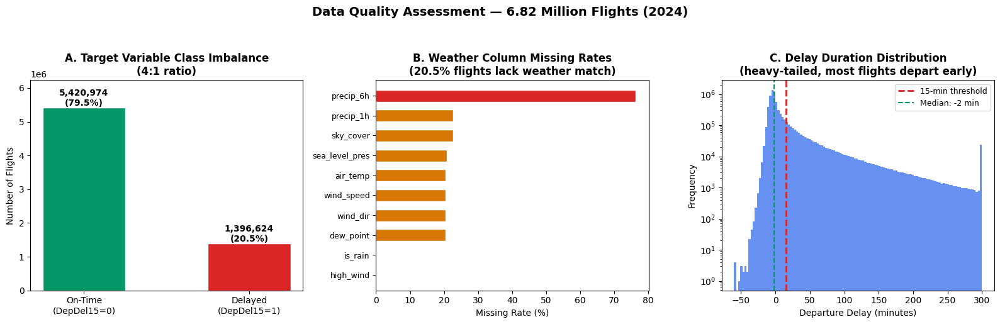
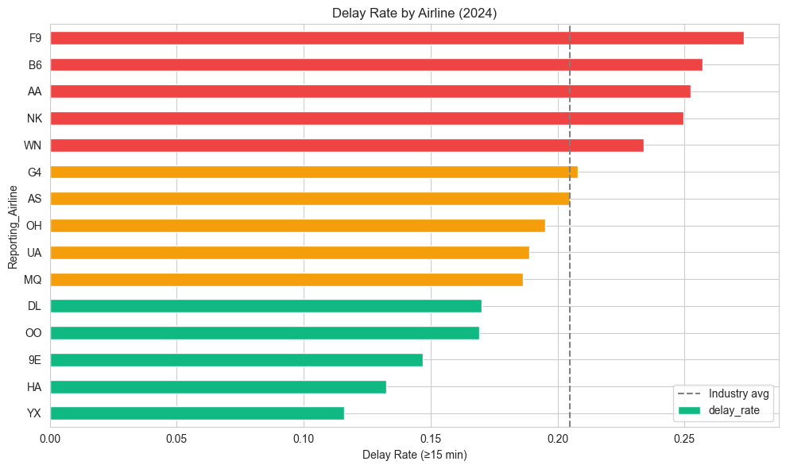
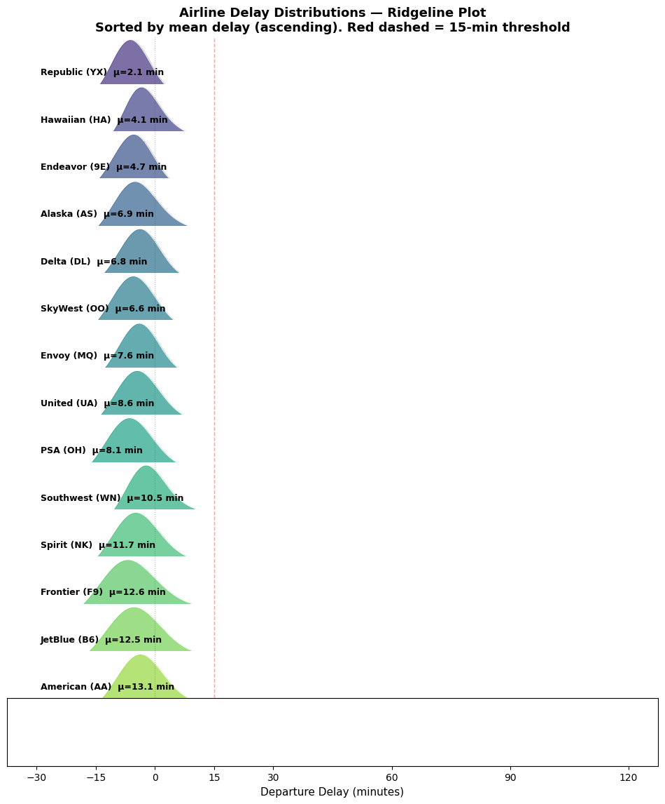
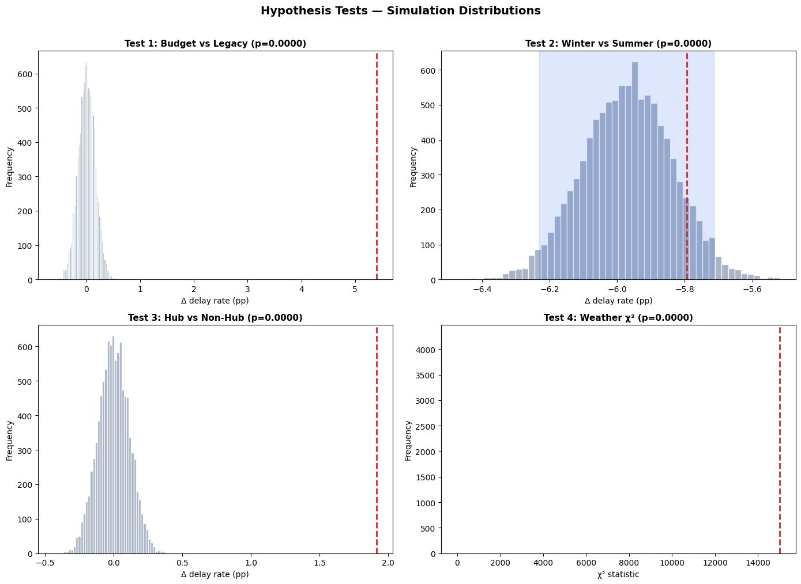
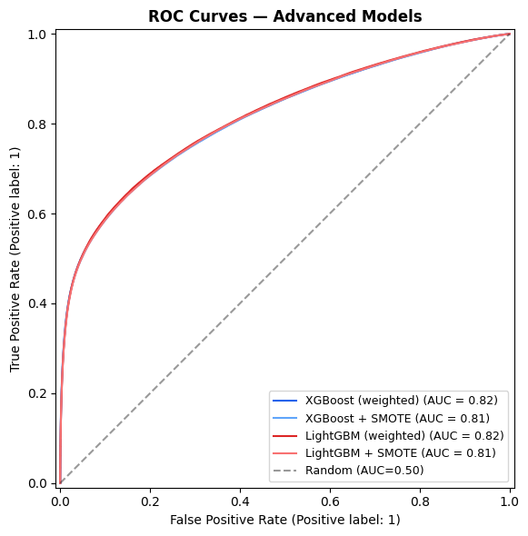
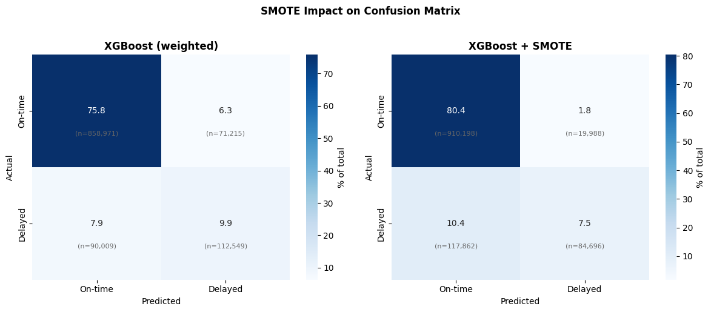
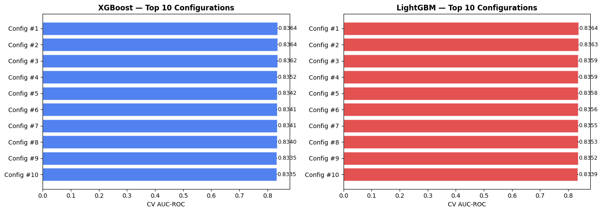
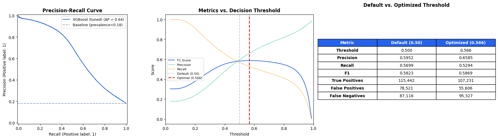
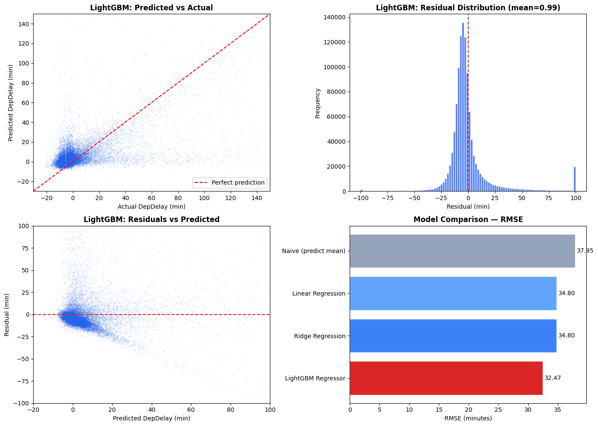

When will your flight be late & why does it matter?
6.8M flight records · NOAA hourly weather · XGBoost AUC 0.819.
Smarter booking, delay insurance, and downstream-trip planning. Choose the flight, not just the price.
Proactive rebooking, crew rotation, and aircraft swap before disruption snowballs through the network.
Gate allocation and ground-staff pre-positioning during forecasted high-risk operational windows.
Risk-priced delay insurance products. Information asymmetry, repriced — see Slide 12.
Every U.S. domestic flight, 2024.
Hourly surface weather, 50 stations.
Joining minute-precise flights to hourly-irregular weather: ~80% match rate at top-50 airports (origin 79.5% · dest 79.5%) with 2-hour tolerance.

−9999 → NaN; trace precip −1 → 0.001 mm.ISD-Lite quirksCRSDepTime is HHMM (allow 2400 = midnight).structuralprecip_6h stays despite 86.7% missing — model handles missing natively.retainedFinal feature matrix: 6,817,598 rows × 81 columns · 80% on-time vs 20% delayed · class weight scale_pos_weight = 3.76.
prev_flight_arr_delay — same aircraft's prior leg.
Hour · day-of-week · month · block · holiday ±1d.
Airline · route · origin 7-day delay rate.
Wind · precip · severity · fog · freezing rain.
Reporting_Airline — 21 carrier codes one-hot.
Hourly flight volume + 20-hub indicator.
Distance bin (5) + O–D pair frequency.
CRSElapsedTime — scheduled block time.
df.groupby(...).shift(1).rolling(7).mean()
shift(1) and CV-AUC silently inflates.Day of week. Tuesday is the most reliable day · Friday & Sunday the worst — business commute timing, leisure peaks, and weekend crew rotation compound.
Weather coverage. NOAA ISD-Lite ≈ 80% of flights at top-50 airports. Remaining ~20% retain full flight features (no weather imputation).


Budget carriers — F9 · NK · G4 — sit ~5.4 pp above legacy DL · UA · AA. Beyond rate, distribution shape differs: some carriers' tails extend much further right — a tail-risk signal binary classification under-uses.
All effects are practically significant — budget carriers, summer travel, hubs, and adverse weather each measurably hurt on-time performance.
Note. Effect sizes are absolute differences in delay rate (percentage points). χ2 df = 1 for the 2 × 2 weather × delay table. All p-values from B = 10,000 simulation draws.

DepDel15 — binary, delayed at least 15 min.shift(1) — only past feeds today.n_estimators=400 · max_depth=6 · lr=0.05).
0.757. Linear ceiling.0.806.0.811. F1 0.580.0.815. F1 0.578.0.817. F1 0.586. best
scale_pos_weight = 3.76. P 0.609 · R 0.553 · F1 0.580.
n_estimators ∈ [200, 800] — best 400max_depth ∈ [4, 10] — best 6learning_rate ∈ [0.01, 0.20] — best 0.05min_child_weight ∈ [1, 10] — best 5subsample ∈ [0.6, 1.0] — best 0.8colsample_bytree ∈ [0.6, 1.0] — best 0.7reg_lambda ∈ [0.5, 4.0] — best 2.0
0.580.0.586.Imbalance handling. scale_pos_weight = 3.76 beat SMOTE oversample — AUC 0.817 / 0.813 · F1 0.586 / 0.549 — class-weighting wins on recall at lower training cost.
Gain = average loss reduction each time a feature is split on, normalized to sum to 1. Use direction: ranks predictive contribution, not causal effect.
DepDelay minutes — Nov–Dec 2024 test| Model | RMSE | MAE | R2 |
|---|---|---|---|
| Naive · predict mean | 37.94 | 21.24 | −0.006 |
| Linear Regression | 34.79 | 16.49 | 0.154 |
| Ridge Regression | 34.79 | 16.49 | 0.154 |
| LightGBM Regressor | 32.41 | 13.60 | 0.266 |

Verdict. LightGBM beats linear by ~2× on R2 but typical error is still ±13.6 min — same order as the 15-min "delayed" threshold we care about. Classification is more practically useful for this problem.
Ridge with α = 1.0 was indistinguishable from OLS — features are not strongly collinear. Train on classification-side features (no ArrDelay leakage); test set: 1.13M Nov–Dec flights.
Illustrative ROI assuming fair-priced premium (no insurer margin). Realized rates from Nov–Dec 2024 test set.
category + Int16 dtypes cut working set ~60%, kept 6.8M rows in-memory.SGDClassifier trained in <3 s.scale_pos_weight = 3.76 beat SMOTE on F1 (0.586 vs 0.549) at lower cost.merge_asof ×2 (origin + dest) with linear-fill ≤6h.shift(1); 500k subsample matches full 5.6M (Δ AUC < 0.002).